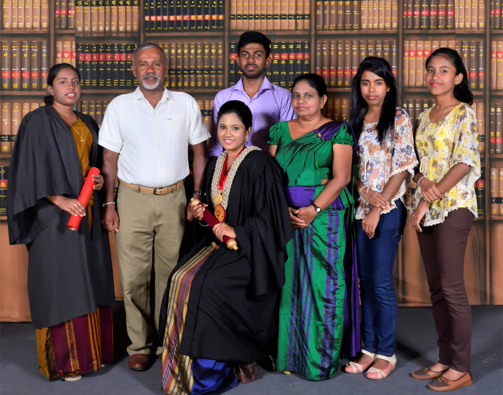
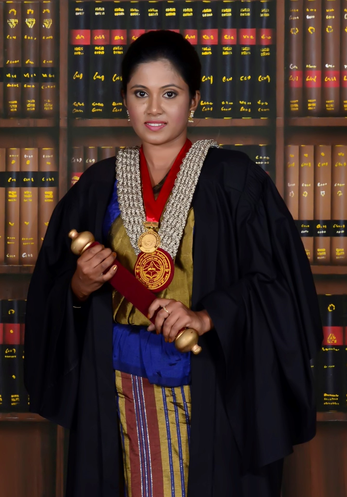

My name is Prasadi Thilanka Senadeera
and I am currently a master candidate in New University of Lisbon in Portugal. I was born in 1991 to a
middle-class family in Sri Lanka. My father was a planter, and my mother is a teacher. We are five
sisters and brothers, and I am the second of them.
In 1996, I started my education journey at the school in my village. After running through five years there, I got
an opportunity to enroll the best school of the country from the grade five scholarship examination that changed my
whole life as I am today. After taking part in the new school, always I was an outstanding student during my secondary
school and high school. At the end of secondary school, I was competent to enter the top 100 uppermost students of the
country with distinction passes for all the subjects in the final examination. In high school, I decided to take up the
mathematics stream for my university entrance examination. Finally, out of around 300,000 students, I was lucky enough to
be included in the 5% who gets university entrance opportunity.
In 2013, I entered the Faculty of Geomatics in Sabaragamuwa University of Sri Lanka as one of the 84 students who got selected for
the surveying science degree program which is the world-class leading bachelors’ degree relevant to Geomatics in the region of South
Asia. During the first five semesters of the degree program, we had to follow the core courses where I have wholeheartedly enjoyed all
the subjects. The ultimate ambition of my life was to become a Professional Surveyor. However, it is perhaps unsurprising that a special
interest was grown in me for the field of remote sensing which changed my career aspirations in this direction. So, by the fifth semester,
I decided to change my academic path to specialize in the field of remote sensing and photogrammetry. Further during the final semester
of my undergraduate, I was selected to complete an internship at Geoinformatics center, Asian institute of technology, Thailand as one
of the two students of the Department of Remote Sensing and GIS who got this great fortune. I had a rare opportunity to blend my knowledge
and experience with the international experts of the field and absorb their knowledge during my time at GIC. Finally, at the end of my four
years of undergraduate life, I could complete my bachelor's with a First class honors including a gold medal for the best performance and
the highest final grade point average (GPA-3.82 out of 4) of my graduating class. Moreover, I was brainy to have distinction passes for
all subjects that I had followed in my specialization course.
 Because of my academic excellence and the ability to multi-task, I was absorbed to the Department of Remote Sensing and GIS as a teaching assistant shortly after two months of my graduation. During my tenure, my duties were instructing first year and second year, undergraduate students, for their land surveying field practices and to deliver practical classes on optical and microwave remote sensing for the students who got selected for the specialization courses. After one year, I was promoted to the grade of assistant lecturer in 2018. Then as an assistant lecturer, further to conducting practical classes I was also assigned to conduct lectures for remote sensing specialization students, designed and evaluate the practical exams of the semester examinations. In the meantime, I worked as a visiting instructor for undergraduate students of the faculty of management studies as well as for master candidates of the Faculty of Graduate Studies at the Sabaragamuwa University of Sri Lanka. In addition to the duties in the university, I was also involved as a resource person for various training programs on GNSS, Google Earth, QGIS, and ArcGIS for land survey professionals and Sri Lanka's revenue department staff. Moreover, I contributed as an instructor to the students’ real-world survey projects such as "Design a suitable channel system for the Sri Lankan Irrigation Department" by engineering students at Ruhuna University and "Design a suitable racetrack for the Kothmale International Training Institute" by students from University of Vocational technologies in Rathmalana, Sri Lanka.
Despite being mostly academic, I have also committed my free time to take part in several scholastic competitions and various extracurricular activities that helped me grow as a person. I was awarded twice in the year 2004 and 2005 as champions of the all-island inter-schools’ hockey tournament and won the certificate of merit in the school’s sports ceremony. As an undergraduate, I have participated in extracurricular activities of the university including sports and fine arts. There, I was able to obtain several awards in the inter-faculty sports meet as 2nd runners-up for badminton in 2015 and 1st runners-up for badminton, 1st runners-up for netball in 2014. Also, I have actively participated in several functions at the university as an announcer. Then in 2019 while I was entitling to an assistant lecturer, I wanted to enhance my academic knowledge as well. So, I started applying for an international master's program. In 2019 I was awarded as a full scholar to receive the Master of Science in Geospatial technologies in Europe, which is offered together with the University of Münster, in Germany, the New University of Lisbon in Portugal, and the University Jaume I, in Spain. I am currently studying in the last semester of the program and working on my dissertation project to develop an automatic road extraction method to delineate roads from high-resolution satellite images using convolution neural network-based image segmentation architectures and morphological operations. Given my history of commitment to excellence, I am confident that I will bring a high level of energy and enthusiasm to any offer that I will receive in the future.